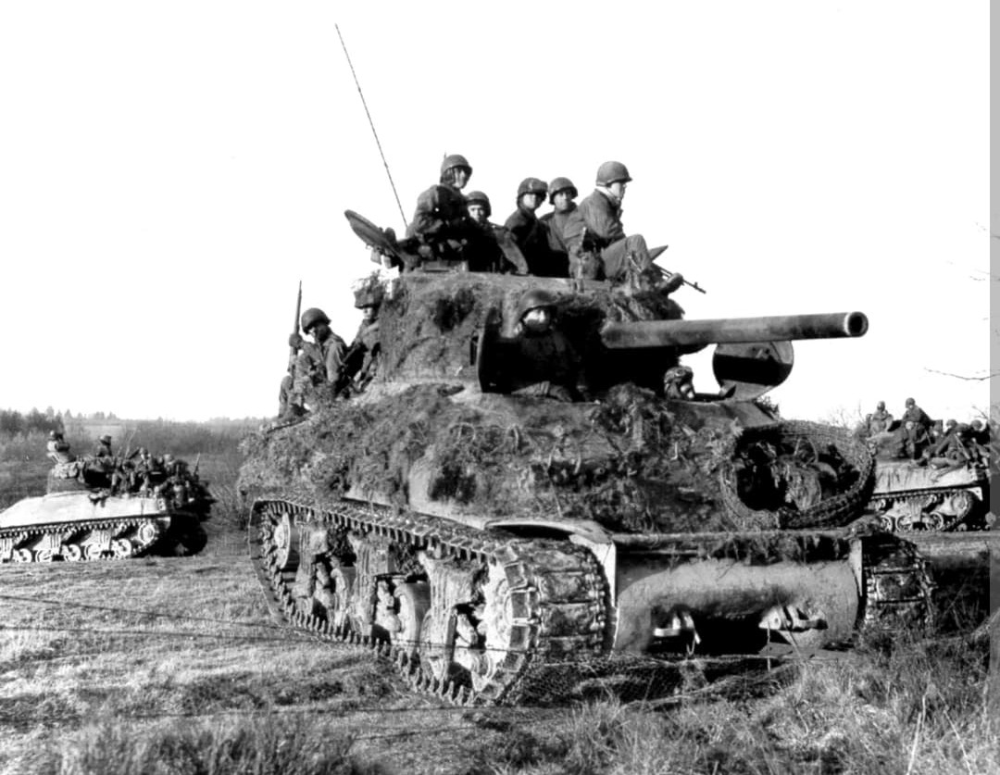
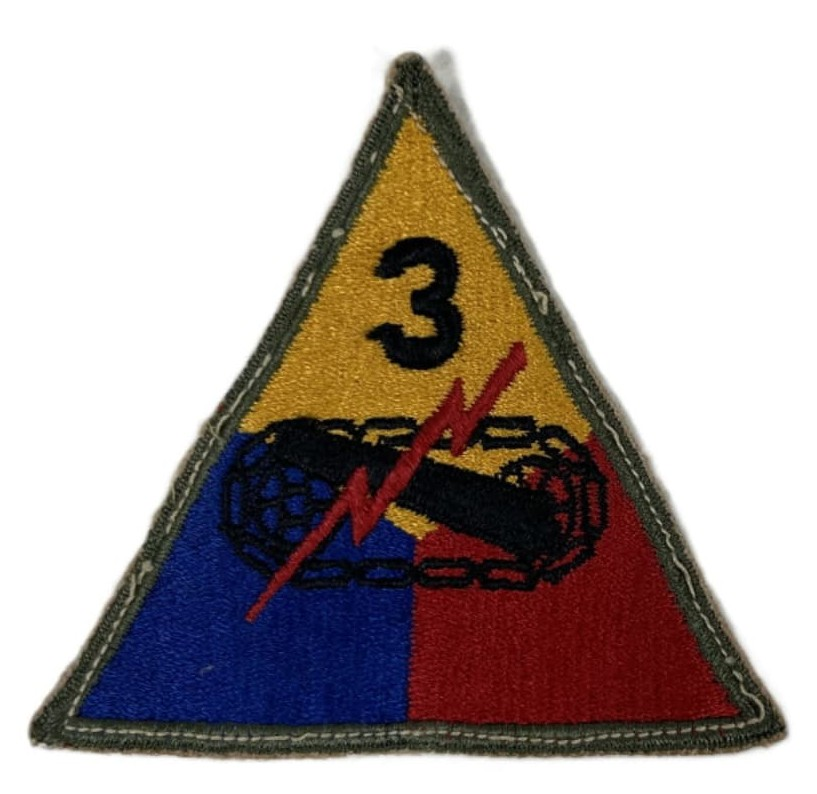
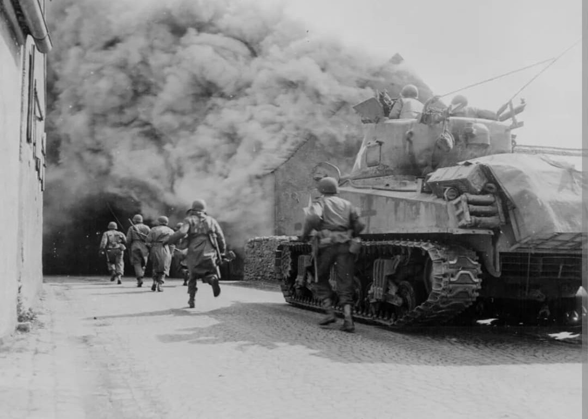

La pointe de lance de la First Army, la fermeture de la poche de Falaise et la première division blindée à fouler le sol allemand

Surnommée « Spearhead » (La Pointe de Lance), la **3rd Armored Division** était l'une des deux seules divisions blindées lourdes (*Heavy Armored Divisions*) de l'US Army déployées sur le théâtre européen.
Placée à la pointe des offensives de la First Army américaine du général Hodges, la 3rd Armored s'est illustrée par sa vitesse d'avance fulgurante et sa puissance de choc, participant à la rupture du front normand, à la fermeture de la poche de Mons et à la capture de la première ville d'Allemagne.
Activée en avril 1941 au Camp Polk en Louisiane, la division prend le surnom officiel de Spearhead en raison de son rôle attribué de pointe de rupture systématique lors des grandes manœuvres d'entraînement.
Son insigne triangulaire arbore les couleurs traditionnelles blindées : le **jaune** (cavalerie), le **bleu** (infanterie) et le **rouge** (artillerie). En son centre figurent le canon de char, la chenille noire et l'éclair rouge symbolisant le feu, la mobilité et la soudaineté de la frappe blindée, surmontés du chiffre **3**.

Débarquée sur **Omaha Beach** à la fin du mois de juin 1944, la division subit d'abord la rude guerre du bocage normand. Fin juillet, lors de l'**Opération Cobra**, la 3rd Armored est lancée en fer de lance pour exploiter la trouée de Saint-Lô, fonçant vers Mayenne et encerclant la 7e Armée allemande dans la poche de Falaise-Chambois.
Fin août 1944, lors de sa course folle à travers le nord de la France et la Belgique, la division réalise la gigantesque **poche de Mons**, piégeant et capturant plus de 25 000 soldats allemands en retraite avant d'atteindre la frontière du Reich.

Le 12 septembre 1944, la 3rd Armored Division devient la **première unité blindée alliée à franchir la frontière allemande** et à percer la ligne Siegfried près de Roetgen. Elle subit ensuite des combats meurtriers dans le secteur de Stolberg.
En décembre 1944, la division est précipitée pour stopper la contre-offensive allemande dans la **bataille des Ardennes**, combattant vaillamment dans la neige autour de Houffalize. En mars 1945, la 3rd Armored fonce vers le Rhin, capture la grande métropole de **Cologne** (rendue célèbre par le duel de chars devant la cathédrale), puis participe à la fermeture du piège de la Ruhr et pousse jusqu'à Dessau sur l'Elbe.
Au cours de ses 231 jours de combat ininterrompu en Europe du Nord-Ouest, la 3rd Armored Division essuie les plus lourdes pertes blindées de l'US Army : plus de **9 200 pertes au combat** (dont environ 2 540 tués) et le remplacement de plus de 1 300 chars détruits ou endommagés.
Deux de ses hommes ont été décorés de la Medal of Honor (dont le légendaire commandant de char Lafayette G. Pool). La division a capturé plus de 76 000 prisonniers allemands et détruit des milliers de véhicules ennemis, marquant à jamais l'histoire de la guerre blindée.
Page du Musée HOP WW2 – Section Unités & Divisions Célèbres